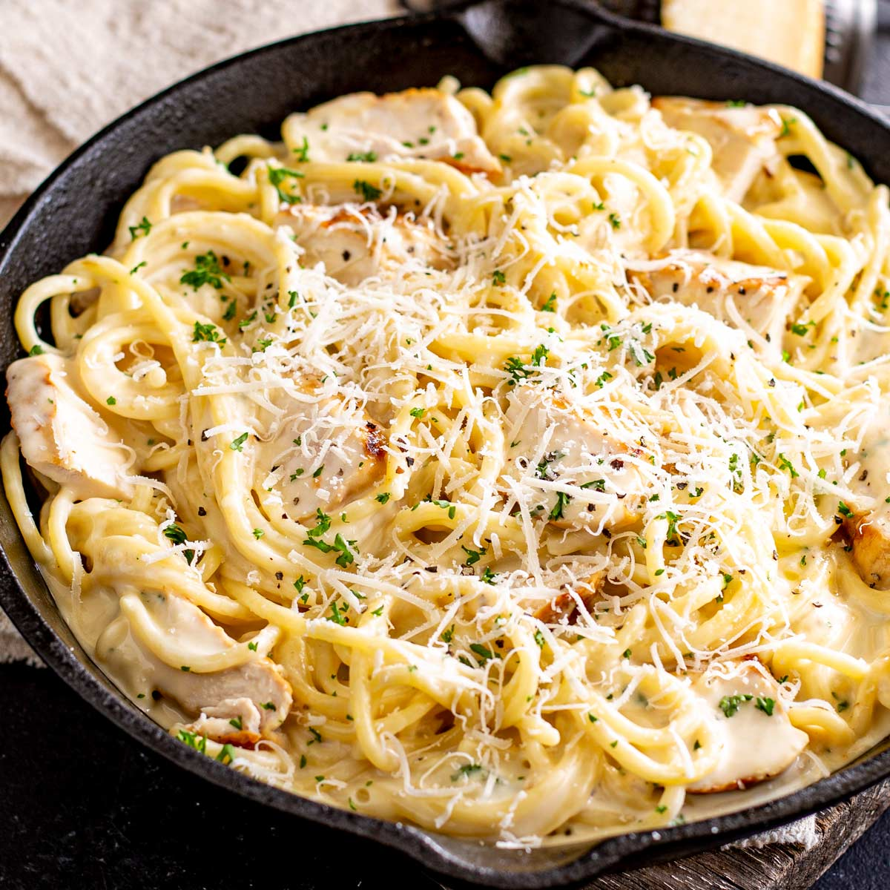

Garlic Parmesan Pasta

Description
This creamy Garlic Parmesan Pasta is a quick and flavorful dish, with rich
butter and garlic coating every strand of pasta. Perfect for a simple yet
satisfying meal!
Ingredients
- 8 oz pasta
- 2 tbsp unsalted butter
- 4 garlic cloves, minced
- 1/2 cup grated Parmesan cheese
- 1/4 cup heavy cream
- Salt and pepper, to taste
- Fresh parsley, chopped
Steps
-
Cook pasta according to package instructions. Drain, reserving 1/4 cup
pasta water
-
In a pan, melt butter over medium heat. Add minced garlic and sauté for
1-2 minutes.
-
Add the cooked pasta to the pan and toss to coat in the garlic butter.
-
Stir in Parmesan cheese and heavy cream (if using), adding reserved
pasta water as needed for desired consistency.
- Season with salt and pepper. Top with fresh parsley and serve!